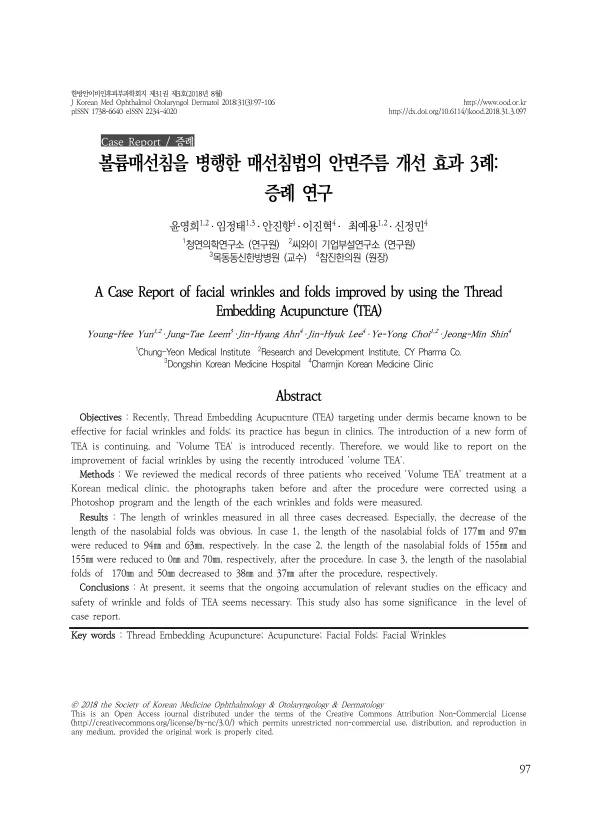

A Case Report of facial wrinkles and folds improved by using the Thread Embedding Acupuncture (TEA)
Yun YH, Leem JT, Ahn JH, Lee JH, Choi YY, Shin JM
The Journal of Korean Medicine Ophthalmology and Otolaryngology and Dermatology 31(3):97-106

첫 장 · 오픈액세스First page · open access
논문 소개Summary
매선침법으로 안면 주름이 나아진 세 사람의 기록입니다. 최근 소개된 볼륨 매선을 병행한 사례로, 한 한의원의 진료기록을 후향적으로 검토하고 시술 전후 사진을 포토샵으로 보정한 뒤 주름의 길이를 재어 견주었습니다. 세 사례 모두 주름 길이가 줄었고 특히 팔자주름의 감소가 뚜렷했습니다. 첫 사례는 177밀리미터와 97밀리미터가 94밀리미터와 63밀리미터로, 둘째 사례는 155밀리미터와 155밀리미터가 0밀리미터와 70밀리미터로, 셋째 사례는 170밀리미터와 50밀리미터가 38밀리미터와 37밀리미터로 줄었습니다. 저자들은 매선의 효과와 안전성에 대한 연구가 더 쌓여야 한다고 적으며 이 보고의 값을 증례 수준으로 한정했습니다.
A record of three patients whose facial wrinkles improved with thread embedding acupuncture, combined with the recently introduced volume thread technique. Medical records from one Korean medicine clinic were reviewed retrospectively, and before-and-after photographs were corrected in Photoshop so that wrinkle lengths could be measured and compared. Wrinkle length decreased in all three, most visibly in the nasolabial folds: from 177 mm and 97 mm to 94 mm and 63 mm in the first case, from 155 mm and 155 mm to 0 mm and 70 mm in the second, and from 170 mm and 50 mm to 38 mm and 37 mm in the third. The authors note that evidence on the efficacy and safety of thread embedding for wrinkles and folds still needs to accumulate, and confine the value of this report to the level of a case report.
인용Cite
Yun YH, Leem JT, Ahn JH, Lee JH, Choi YY, Shin JM. A Case Report of facial wrinkles and folds improved by using the Thread Embedding Acupuncture (TEA). The Journal of Korean Medicine Ophthalmology and Otolaryngology and Dermatology. 2018;31(3):97-106. doi:10.6114/jkood.2018.31.3.097